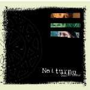

| Artist: | Notturno Concertante |
| Title: | Riscrivere Il Passato |
| Label: | label and catnr unknown |
| Length(s): | 46 minutes |
| Year(s) of release: | 2002 |
| Month of review: | [05/2002] |
| 1) | Giga | 3.19 |
| 2) | Per/versi | 2.53 |
| 3) | Io Ti Amo | 2.54 |
| 4) | Six Of The Best | 2.53 |
| 5) | En Clave De Sol | 1.30 |
| 6) | La Citta' Nuova | 4.29 |
| 7) | Electric Rain | 3.00 |
| 8) | If The Winter Had Its Spirit | 2.57 |
| 9) | Gente Dietro La Finestra | 3.50 |
| 10) | La Danza | 2.43 |
| 11) | Erewhon | 2.51 |
| 12) | Lezioni Di Vita | 3.47 |
| 13) | So Many Things | 2.36 |
| 14) | Flood Of Tears | 3.45 |
| 15) | La Luce Della Notte | 2.47 |
Apart from the fifteen tracks of their new album, my promo CDR also contained seven tracks, some of which can be obtained through the bands website at stage.vitaminic.it/notturno_concertante (soon to become www.notturnoconcertante.it)
Io Ti Amo is the first vocal track, a pleasant light progressive track.
Six of the best is a modern sounding instrumental (well, expect for the ho-ho-ing lady), featuring keyboards, followed by the short acoustic guitar track En Clave De Sol, which has a certain Ant Phillips liking.
La Citta' Nuova is another vocal piece. Yet another track floating by pleasantly, until its guitar solo gives it something of a bite. The track continues in the same laid back atmosphere, ending with a key carpet.
Electric Rain starts moodily with cello, the rhythm surfacing as the track moves along is pretty dominant, approaching Now Drowning, Waving.
If The Winter Had Its Spirit is pretty Celtic, violin and something hurdy gurdy like leading the way, once more laying on a bad of keys.
Gente Dietro La Finestra is merely a poprock track, with only the keyboards sometimes dropping hints of progressiveness.
La Danza is led by accordeon and is exactly the traditional town dance track you might expect. Sort of like square dancing, but traditional instead of, well, erm, whatever. Erewhon starts one of those Ant Phillips tracks again, but violin and drums push to the foreground, giving it more of an overall feel.
Lezioni Di Vita is a vocal track, followed by the acoustic guitar, piano and cello of So Many Things. Nice and peaceful. Flood Of Tears is a more modern instrumental, although the keyboards remind me of mid eighties electronics such as for instance Yanni. La Luce Della Notte closes the album opening with keyboards joined by acoustic guitar, once again showing that blend of traditional and modern elements that rules this album.